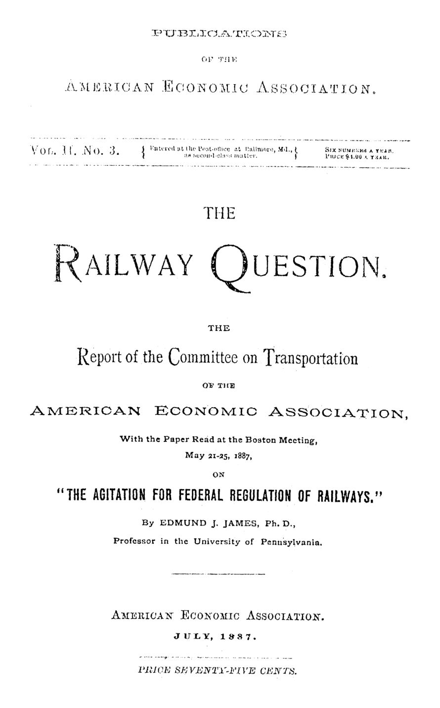

As ferrovias e a primeira agência reguladora dos EUA
Em 1887, um economista explicou por que a concorrência não disciplinava as ferrovias dos EUA: 30 mil estações tinham uma só linha e o capital era em boa parte fictício. A resposta foi a primeira comissão reguladora federal.


A Wabash, Saint Louis and Pacific Railway cobrava 15 centavos por cem libras para levar uma carga de Peoria, em Illinois, até Nova York. De Gilman, na mesma linha e também em Illinois, cobrava 25 centavos pela mesma classe de carga, embora o percurso dentro do estado fosse bem menor. Illinois processou a empresa com base em sua lei contra a discriminação tarifária e venceu nos tribunais locais. A Suprema Corte, no período de outubro de 1886, reverteu a decisão: tarifas entre estados eram assunto do Congresso, e só dele.
O caso, relatado pelo senador Beck em discurso de janeiro de 1887, aparece num volume publicado pela American Economic Association em julho daquele ano, com o relatório do seu Comitê de Transportes e um ensaio de Edmund J. James, professor da Universidade da Pensilvânia, lido na reunião de Boston, em maio. O tema é a campanha de cerca de 20 anos pela regulação federal das ferrovias, que acabara de produzir a Lei do Comércio Interestadual.
O Estado pode ser neutro diante de uma ferrovia?
James começa desmontando a premissa. Sem o direito de desapropriar terras, o domínio eminente, prerrogativa do governo, a malha não teria chegado à escala que tinha. Sem a sociedade por ações de responsabilidade limitada, com papéis livremente transferíveis, o capital necessário não teria sido reunido. Uma corporação ferroviária existe porque a lei a criou, e cada cláusula de uma concessão confere ou nega poder. A conclusão é seca.
Nenhuma atividade é atividade do tipo mais intensivo. (no activity at all is activity of the most intensive kind)
O debate, portanto, nunca foi entre intervir ou não, mas sobre como. Os estados, ávidos por trilhos, primeiro construíram por conta própria ou concederam subsídios. Depois abriram as portas à chamada construção competitiva: cinco ou dez homens que juntassem alguns milhares de dólares podiam fundar uma ferrovia, com poder de desapropriar e de fixar tarifas à vontade.
De onde vinha o capital fictício?
O esquema descrito era simples. Os incorporadores integralizavam, digamos, 5% do capital nominal e criavam, dentro da própria companhia, uma construtora. Como diretores da ferrovia, emitiam para si mesmos, como diretores da construtora, títulos a juros altos em pagamento de obras superfaturadas. Tomavam empréstimos para pagar juros e dividendos, davam à linha aparência de lucrativa, vendiam os papéis no pico e saíam, deixando uma empresa falida.
O custo declarado da obra chegava a três ou quatro vezes o real. Essa dívida inflada servia depois de justificativa para tarifas altas, cobradas sobretudo onde não havia concorrente. James lista ainda as companhias-satélite que vendiam suprimentos à ferrovia com contratos generosos e as estações instaladas onde os próprios diretores tinham comprado terrenos.
O exemplo mais eloquente está numa nota sobre a Illinois Central, com dados de 1º de janeiro de 1873 reproduzidos do Congressional Globe. Somadas as distribuições gratuitas de ações e a venda das terras recebidas em doação, o desembolso efetivo dos donos caía para US$ 4.930,86 por milha, num custo declarado de US$ 48.331,75 por milha.
Por que a concorrência não disciplinava as tarifas?
Porque, na maior parte do país, ela não existia. Em 1º de janeiro de 1887, segundo o chefe do Bureau de Estatística citado pelo senador Cullom, havia 33.691 estações ferroviárias nos Estados Unidos, das quais só 2.778 eram entroncamentos, com mais de uma ferrovia. Nas demais, o usuário tinha um único fornecedor.
Mesmo nos poucos pontos disputados, a rivalidade durava pouco. Terminava num acordo para dividir tráfego ou receitas, o pool, na compra de uma linha pela outra ou numa falência seguida de reorganização. Nesse caso, o tráfego entre as duas cidades passava a remunerar dois capitais em vez de um.
A diferença aparece nos fretes. Levar um bushel de trigo do norte de Iowa a Chicago, cerca de 400 milhas, custou numa temporada de 10,8 a 16,8 centavos. A tarifa mais alta superava a de Chicago a Liverpool, mais de 4 mil milhas.
O relatório da comissão especial do Senado conhecido como Relatório Cullom, de 18 de janeiro de 1886, reconhecia que o país tinha o serviço ferroviário mais eficiente e as tarifas mais baixas do mundo. Mas listava 18 queixas: tarifas locais desproporcionais, preços fixados pelo critério do que o tráfego suporta, abatimentos secretos, capitalização muito acima do custo, passes gratuitos que criavam uma classe privilegiada.
Seus benefícios reconhecidos foram obtidos ao custo das discriminações mais injustificadas. (its recognized benefits have been attained at the cost of the most unwarranted discriminations)
O que a lei de 1887 proibiu, e quem iria fiscalizar?
O projeto passou com folga: 43 votos a 15 no Senado e 191 a 32 na Câmara. James registra, com ironia, o deputado da Pensilvânia que, antes da votação final, pediu uma saída para os colegas que pretendiam votar a favor sem aprovar o conteúdo.
A lei alcançava toda ferrovia de tráfego interestadual. Proibia a discriminação pessoal, pois A não pode pagar mais nem menos que B por serviço idêntico, e a preferência indevida a pessoas, empresas ou localidades. Vedava os pools e a cobrança de mais, no total, por um trajeto curto do que por um longo que o contenha. Exigia tarifas afixadas em todas as estações e aviso prévio de dez dias para qualquer aumento.
A execução cabia a uma comissão com poder de investigar queixas, requisitar livros, contas e contratos, reportar ao Congresso e até suspender a cláusula do trajeto curto. Violações passavam a ser assunto público, a ser processado pelas autoridades, e não mais uma briga privada do embarcador contra a companhia. Para James, os abusos que dependiam do segredo tenderiam a diminuir muito.
Ele não via na lei um modelo. Era um compromisso entre interesses em conflito, que nada resolvia, salvo inaugurar a experimentação. Previu até que ela aceleraria a consolidação das linhas sob uma só gestão, e que mais combinação traria mais facilidade de controle. Sua defesa era pragmática.
Seguir em frente, quer você saiba ou não que está certo. (go ahead, whether you know you are right or not)
Na minha leitura
Na minha leitura, o ponto mais duradouro do texto é o primeiro: não existe Estado neutro diante de infraestrutura. Quem concede o direito de desapropriar, a responsabilidade limitada e a licença para fixar preços já escolheu um desenho de mercado. A pergunta útil não é se o governo deve intervir, mas se as regras que ele próprio criou alinham os incentivos de quem constrói, de quem financia e de quem usa.
Também me parece notável a honestidade intelectual de James. Ele defende a lei admitindo que ela é um compromisso imperfeito e que pode até acelerar a concentração que pretendia conter. Regulação, nessa visão, é um processo de aprendizado com dados públicos, e não um decreto que resolve o problema de uma vez.
Glossário
- Pool
- acordo entre ferrovias concorrentes para dividir tráfego ou receitas e manter tarifas, eliminando a competição.
- Domínio eminente (eminent domain)
- poder do Estado de desapropriar propriedade privada para uso público, mediante indenização.
- Ações aguadas (watered stock)
- ações emitidas sem contrapartida em capital efetivamente investido, inflando o capital nominal da empresa.
- Trajeto longo e curto (long and short haul)
- regra que proíbe cobrar mais, no total, por um percurso curto do que por um mais longo na mesma direção que o inclua.
- O que o tráfego suporta (what the traffic will bear)
- critério de preço baseado na capacidade de pagamento do usuário, e não no custo do serviço.
Fontes
- The Railway Question (Report of the Committee on Transportation; The Agitation for Federal Regulation of Railways) (pp. 10–68). JSTOR · Internet Archive (PDF)
- Sumário da edição no JSTOR: Publications of the American Economic Association, vol. 2, nº 3.
Documento em domínio público (EUA, publicado antes de 1931), via JSTOR Early Journal Content e Internet Archive. Resumo e comentário do autor deste site, sem afiliação com a American Economic Association. Encontrou um erro? Escreva: a correção é publicada no próprio texto, com data.
← Nº 7 · Pensilvânia, 1842: o estado que quis viver de canais, não de impostos